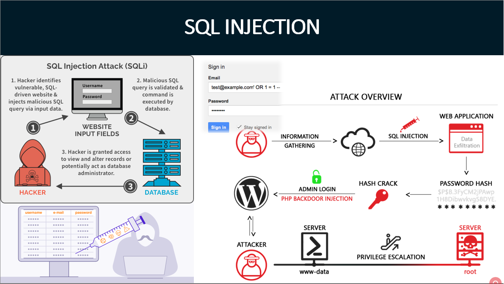

Typy webových aplikací
- API (zkratka pro Application Programming Interface) označuje v informatice rozhraní pro programování aplikací
-
V programátorské praxi se můžeme setkat s celou řadou API
- API operačních systémů
- Grafickými API
- Api databázových a informačních systémů
- API se nyní hojně využívá při vývoji mobilních i webových aplikací a tvorbě internetových stránek
- Smyslem webových API je zajištění komunikace mezi dvěma platformami, které si vzájemně vyměňují data
- V praxi se s integrací aplikačního rozhraní setkáváme třeba na stránkách zobrazujících polohu obchodu na Google mapách GoogleMap API
- Další populární api
- YouTube API
- Twitter API
- Amazon API
- K implementaci API lze přistupovat několika způsoby
- Nejstarším prostředkem zůstává takzvaný Simple Object Access Protocol, zkráceně SOAP (využívá XML)
- Jeho cílem je snazší sdílení informací různých aplikací, běžících v různých prostředích nebo v různých jazycích
- Dnes je využíván převážně bankami a pojišťovnami; v ČR tento typ API využívá systém EET
- V širším měřítku je ovšem vytlačován REST API (někdy RESTfull API)
- Na rozdíl od SOAP, je to architektura fungující na principu klient-server, kdy veškerá uživatelská data zůstávají uložena na straně klienta
- Díky tomu by nemělo dojít k úniku citlivých dat
- Jedná se o pravděpodobně nejpoužívanější řešení určené k tvorbě aplikačních rozhraní. Ke své funkci využívá HTTP protokol
- Následníkem REST API je GRAPHQL, původně vyvíjené Facebookem, který ho také používá v rámci své sociální sítě
- Časem se z něj stal open-source a může tak být bezplatně využíván širokou veřejností
- GRAPHQL je jazyk dotazů, který běží na straně serveru
- Umožňuje stahovat data z více zdrojů najednou, což znatelně ulehčuje práci programátorů
- Nabízí větší rychlost zpracování než REST API, má bohatší škálu využití, není závislý na architektuře a lze ho implementovat i nad stávající REST API.
Bezpečnostní rizika webových API
1 / 6

Caption Text
2 / 6

Caption Two
3 / 6

Caption Three
4 / 6
Caption Three
5 / 6
Caption Three
6 / 6

Caption Three
Cross-site scripting
Co to je:
- Cross-site scripting (XSS) je metoda narušení WWW stránek využitím bezpečnostních chyb ve skriptech (především neošetřené vstupy)
- Útočník díky těmto chybám v zabezpečení webové aplikace dokáže do stránek podstrčit svůj vlastní javascriptový kód
- Často je též využíván při phishingu tak, že je skrze XSS zranitelnosti uživateli ukázán jiný obsah na jinak důvěryhodné stránce
Obrana:
- V textech zadávaných uživateli je třeba speciální znaky nahrazovat entitami
- < nahrazovat za &-lt;, v java aplikacích nejlépe pomocí značky c:out value="${hodnota}"/
- Kontrolovat URL od uživatele, která jdou do obrázků, odkazů a podobně, protože mohou začínat např. na javascript:. Kvůli různým variacím a budoucím změnám je vhodné použít pro tuto kontrolu whitelist
Clickjacking
Co to je:
- Cizí stránka, na kterou je veden útok, je zobrazena na útočníkově stránce v iframe tak, že je vidět jen část bez bližšího kontextu
- Uživatel je naveden ke kliknutí na tuto část stránky, čímž provede nějakou akci, například hlasování v anketě
Obrana:
- Lze se bránit hlavičkou X-Frame-Options, která je v některých prohlížečích podporována, a Javascriptem
- Princip spočívá v zabránění zobrazení stránky v rámci
Phising
Co to je:
- Phishing je aktivní útok využívající sociální inženýrství, při kterém útočník vydává svoje vlastní webové stránky za oficiální stránky instituce / aplikace, aby získal přihlašovací údaje uživatele
Obrana:
- Vzdělávání uživatelů v kontrole autentizace serveru, použití Extended Validation SSL Certificates
Cross-site request forgery
Co to je:
- Cross-site request forgery (XSRF) je pasivní útok, kdy útočník nachystá na nějakou stránku kód, který způsobí vyvolání URL na nějakém jiném serveru, kde uživatel může být stále přihlášen
Obrana:
- Důležité akce (třeba převod peněz) je třeba potvrzovat, do přihlašovacích formulářů je třeba přidávat náhodně generované hodnoty
- V administrační části internetových aplikací, pro akce, které mažou určité záznamy nebo je jiným způsobem mění, se doporučuje zásadně používat HTTP metodu POST
- Používat autorizační token – náhodně vygenerovaný řetězec pro danou akci a pro aktuálního uživatele
Session hijacking
Co to je:
- Session hijacking je útok, při kterém útočník odposlechne cookie použité pro označení úspěšně autentizovaného uživatele , a začne se za něj vydávat
Obrana:
- Session cookies musí mít označení secure, tedy mohou být poslána jen přes šifrovaná SSL spojení
- V případě předávání session ID přes URL je obrana komplikovanější, vyžaduje zabránit úniku URL přes referer (odkazy, obrázky, ...) a Session fixation
SQL injection
Co to je:
- SQL Injection je technika napadení databázové vrstvy programu vsunutím (odtud „injection“) kódu přes neošetřený vstup a vykonání vlastního pozměněného SQL dotazu
Obrana:
- Důsledné používání tzv. PreparedStatement a jeho setXXX() metod pro nastavování hodnot
- Tam kde se nejedná o hodnotu (třeba název sloupce v ORDER BY), zkontrolovat vstup regulárním výrazem na očekávané hodnoty
Redakční systémy a e-commerce
| Název | WordPress | Joomla! | Drupal |
|---|---|---|---|
| Stažení | 140 milionů | 50 milionů | 15 milionů |
| Témata zdarma | 2500+ | 900+ | 1900+ |
| Pluginy zdarma | 3100+ | 8000+ | 2500+ |
| Jednoduchost použití | |||
| SEO | |||
| Škálovatelnost |